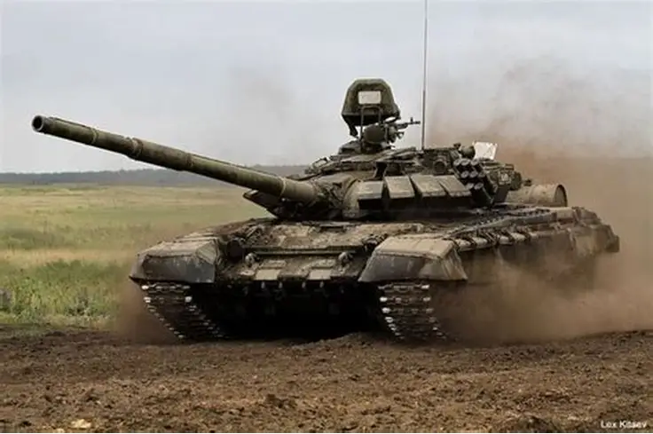

La tecnología militar abarca una amplia variedad de equipos diseñados para defensa, estrategia y operaciones tácticas. Desde armas ligeras hasta vehículos blindados, cada herramienta cumple un rol específico dentro del campo militar.